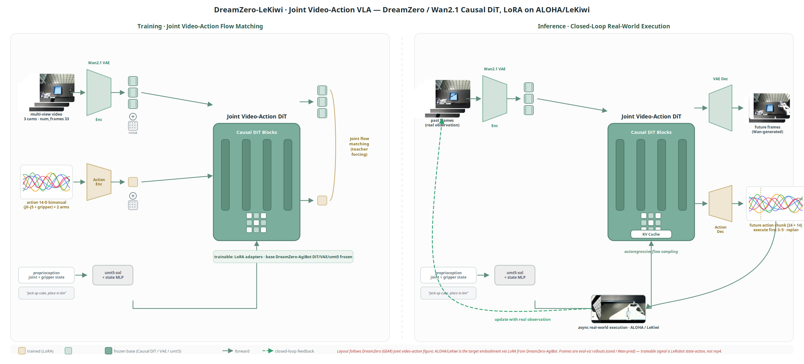

I am a M.Sc. student at The Chinese University of Hong Kong (CUHK). I build embodied AI systems that connect teleoperation, multimodal perception, policy learning, and real-robot deployment.
My recent work spans xArm6 + LEAP Hand manipulation, VLA fine-tuning, diffusion-policy style robot control, humanoid perception, dataset tooling, and deployment pipelines that run beyond offline benchmarks.
Current focus: real-robot manipulation systems with traceable data flow, policy serving, sensor feedback, and recovery logic.
Education
The Chinese University of Hong Kong
2025.09 - 2026.07
Department of Computer Science and Engineering · M.Sc. in Computer Science · GPA 3.7 / 4.0
Honor: M.Sc. in Computer Science Programme Excellent Student Scholarship, The Chinese University of Hong Kong
Sun Yat-sen University
2021.09 - 2025.06
School of Intelligent Systems Engineering · B.Eng. in Intelligent Science and Technology · GPA 3.7 / 4.0
Major honors: SYSU Outstanding Undergraduate Third-Class Scholarship, Guangdong Soong Ching Ling Scholarship, Jieyang Outstanding Student Cadre
Experience
Beijing Jike Future Technology Co., Ltd. (RoboScience)
2025.12 - 2026.06
Algorithm Intern · Social-robot interaction and real-robot manipulation systems
- Affective Robot Interaction: engineered a multimodal social-robot interaction stack with Qwen2.5-VL/OpenCV perception, Text-to-Action CVAE, image-conditioned Diffusion Policy, and 10D WebSocket + Dynamixel execution over 194 reaction episodes.
- VoxIntent: engineered the voice-to-intent subsystem of a Jetson AGX Orin manipulation robot (3-tier VAD, 4-engine streaming ASR, dual-path NLU, 6-state dialog manager, VLM instruction grounding, TTS echo guard), lifting field-reported far-field VAD hit rate from 0% to 92% with 150-300 ms ASR partials.
- Embodied Coin Standing and Placement: architected an xArm6 + LEAP Hand closed-loop manipulation workflow with D435 / fingertip cameras, frozen RADIO summaries, a 16-step / 6-step ACT-style policy, checkpoint hot-switching, HSV tilt + hand-joint gating, grasp verification, rule-based half-arc transfer, and automatic episode reset.
Huawei Technologies Co., Ltd. & SYSU VLN Lab
2024.02 - 2024.06
VLM Navigation Intern · NavLLaVA visual-language navigation decision model
- Curated and normalized 120K boundary images, then designed scene-description / instruction / model-imagination prompts for multi-scenario navigation decisions.
- Applied LoRA fine-tuning with only 0.5% trainable parameters and rank
r=16, reducing memory use by 42% and improving navigation success by 6.8 pp.
- Improved decision-output format consistency to 87%; reported 52.1% success for LLaVA-7B in multi-scenario navigation evaluation.
Tech Stack
xArm SDK
LEAP Hand
RealSense
AprilTag
OpenCV
PyTorch
Hydra
OmegaConf
ZMQ
Viser
zarr
LoRA
Transformers
Research Interests
Embodied AI
Robot Learning
VLA
Diffusion Policy
Perception
Simulation
Deployment
Pinned Projects

VoxIntent: Voice-to-Intent Pipeline for Manipulation Robot
Algorithm Intern Project · Jetson AGX Orin, 2026
Owned the voice-to-intent front-end of a Jetson AGX Orin manipulation robot — turning noisy far-field ALSA audio into structured execution intents (downstream SAM3 / grasp / IK / motors are collaborator-owned).
Value
Voice→Intent pipeline
Structured exec intent
On-device Jetson AGX Orin
Edge
Stateful Silero VAD
Cloud endpointing transfer
Rapid-stitch buffering
5-layer semantic defense
TTS echo guard (no AEC)
Metrics
0→92% far-field VAD
150–300ms ASR partial
4 ASR engines
290+ zh→en dict

DreamZero-LeKiwi: Joint Video-Action VLA Fine-Tuning on ALOHA/LeKiwi
Robot Learning Project, 2026
A DreamZero-style joint video-action VLA pipeline on an ALOHA/LeKiwi tabletop setup, built on the thesis that most real-robot VLA failures are data-control interface bugs, not model capacity.
Value
Reproducible VLA pipeline
Schema-correct data/control
LeRobot→GEAR→DreamZero
Edge
Camera-order validation
Receding horizon
Robot adapter (unnorm+clamp)
Gripper convention
Metrics
3-view sync
24-step chunk
LoRA SFT
WebSocket infer

Embodied Coin Standing and Placement
Embodied AI / Real-Robot Deployment Project, 2026
A closed-loop xArm6 + LEAP Hand system that stands a coin, verifies the grasp by vision and hand state, hot-switches from a stand to a place policy, transfers along a rule-based arc, and auto-resets for the next episode.
Value
Closed-loop manipulation
Sensor-gated phase switch
Auto episode recovery
Edge
Policy hot-switch (stand→place)
ROI grasp verification
HSV tilt + LEAP joint gate
Rule-based half-arc
Metrics
xArm6 + LEAP Hand
5 views (4 RGB + D435)
16 / 6 horizon / chunk
2 checkpoint bundles

Affective Robot Interaction: A Multimodal System for Companion Robots
Algorithm Intern Project, 2026
A social-robot multimodal interaction stack routing camera / VDMocap input through Qwen2.5-VL perception into two generative trajectory routes (Text-to-Action CVAE and image-conditioned Diffusion Policy), then a calibrated 10D Dynamixel execution layer.
Value
Multimodal interaction stack
CVAE + DP dual-route
10D calibrated execution
Edge
~9× Qwen-cache speedup
CVAE vs DP routes
Non-blocking exec lock
Perception fallback
Metrics
194 episodes
10D (T,10) contract
2.5–5.5s latency
~9× Qwen cache

π0.5 VLA Fine-Tuning on LIBERO Benchmark
Algorithm Intern Project, 2026
Migrated Physical Intelligence’s π0.5 VLA to the LIBERO benchmark under a 24 GB single-GPU LoRA budget, packaged as a reproducible benchmark pipeline rather than a one-off run.
Value
Reproducible benchmark pipeline
24GB single-GPU LoRA
Checkpoint-aware archiving
Edge
Action-expert LoRA leakage fix
Freeze-filter 2.6M/18M/305M
norm_stats reuse
OOM → LoRA redesign
Metrics
94.2% mean success
+2.0pp vs official
+18.2pp vs OpenVLA-7B
2000 episodes

Retrieval-Augmented Manipulation
Personal Project · Idea & Design, 2026 · on Chen et al., Science Robotics
A retrieval-first manipulation design: discover the object, retrieve a 3D category template, inherit its grasp points and support planes — so a single RGB frame of an unseen instance is enough to act. I own the system design and training scheme; quantitative results are attributed to the paper.
Value
Retrieval-first design
Single-image zero-shot
New object = lookup, not retrain
Edge
Retrieval-first vs end-to-end
Frozen DINOv2-B/14
Object-centric 3D frame
Structured geometry fitting
Metrics
RAM-K = 5
128 template views
4 decoupled stages
2304-D DINOv2
14 tasks / 31 obj (per paper)